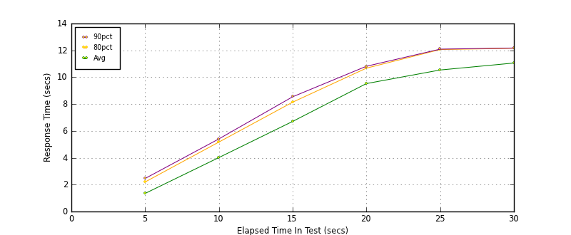
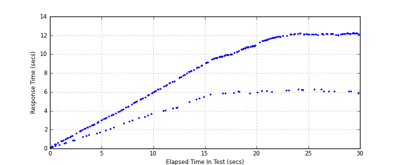
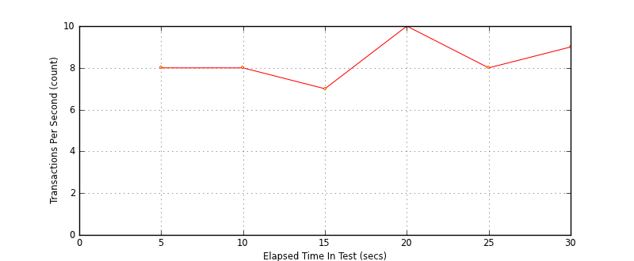
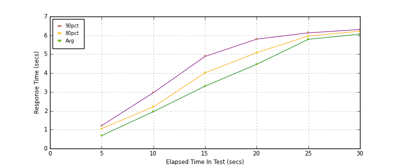
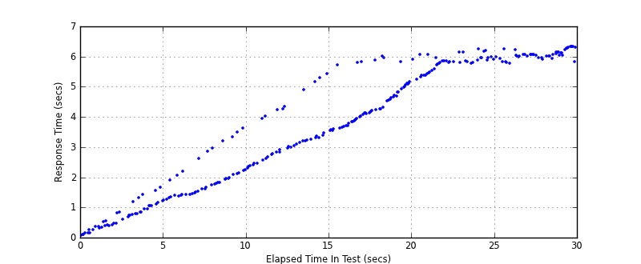
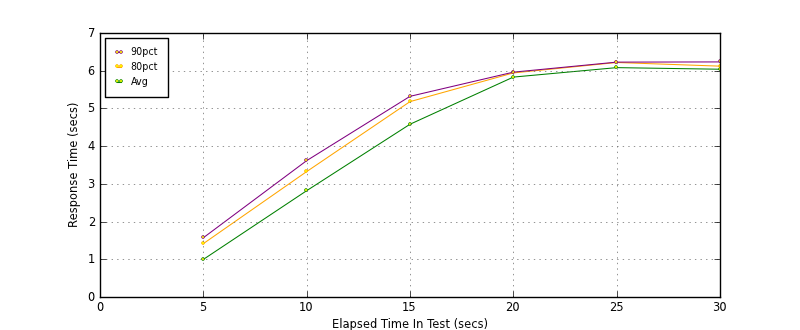
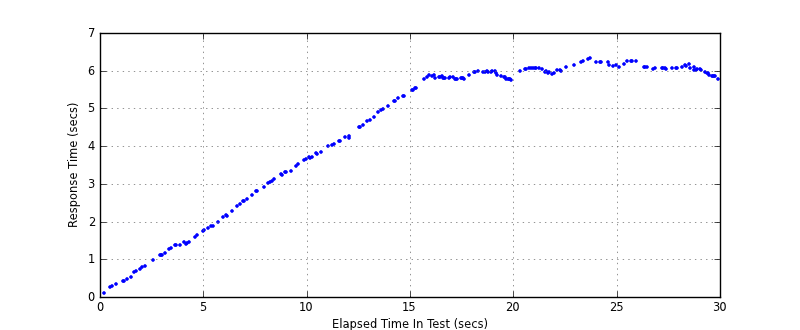
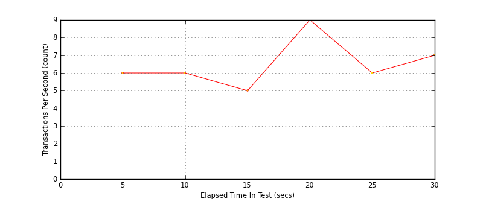

Performance Results Report
Summary
transactions: 364
errors: 0
run time: 30 secs
rampup: 10 secs
test start: 2014-01-21 15:22:50
test finish: 2014-01-21 15:23:20
time-series interval: 5 secs
workload configuration:
| group name | threads | script name |
|---|
| user_group-1 | 10 | read_user.py |
| user_group-2 | 90 | readwrite_user.py |
All Transactions
Transaction Response Summary (secs)
| count | min | avg | 80pct | 90pct | 95pct | max | stdev |
|---|
| 364 | 0.060 | 7.325 | 11.794 | 12.104 | 12.149 | 12.197 | 3.953 |
Interval Details (secs)
| interval | count | rate | min | avg | 80pct | 90pct | 95pct | max | stdev |
|---|
| 1 | 44 | 8.80 | 0.060 | 1.347 | 2.199 | 2.459 | 2.684 | 2.950 | 0.830 |
| 2 | 41 | 8.20 | 1.888 | 4.017 | 5.170 | 5.406 | 5.637 | 5.905 | 1.068 |
| 3 | 38 | 7.60 | 3.948 | 6.707 | 8.141 | 8.542 | 8.699 | 8.780 | 1.443 |
| 4 | 54 | 10.80 | 5.725 | 9.526 | 10.675 | 10.816 | 10.856 | 10.898 | 1.521 |
| 5 | 41 | 8.20 | 5.899 | 10.538 | 12.061 | 12.091 | 12.105 | 12.184 | 2.400 |
| 6 | 46 | 9.20 | 5.824 | 11.056 | 12.153 | 12.175 | 12.185 | 12.197 | 2.325 |
Graphs
Response Time: 5 sec time-series

Response Time: raw data (all points)

Throughput: 5 sec time-series

Custom Timer: get_tweets
Timer Summary (secs)
| count | min | avg | 80pct | 90pct | 95pct | max | stdev |
|---|
| 264 | 0.058 | 3.762 | 5.938 | 6.062 | 6.172 | 6.333 | 2.026 |
Interval Details (secs)
| interval | count | rate | min | avg | 80pct | 90pct | 95pct | max | stdev |
|---|
| 1 | 44 | 8.80 | 0.058 | 0.684 | 1.054 | 1.214 | 1.422 | 1.661 | 0.417 |
| 2 | 41 | 8.20 | 1.239 | 1.953 | 2.209 | 2.959 | 3.338 | 3.614 | 0.634 |
| 3 | 38 | 7.60 | 2.282 | 3.306 | 4.013 | 4.882 | 5.289 | 5.422 | 0.845 |
| 4 | 54 | 10.80 | 3.541 | 4.463 | 5.082 | 5.800 | 5.876 | 6.005 | 0.717 |
| 5 | 41 | 8.20 | 5.235 | 5.791 | 5.965 | 6.132 | 6.172 | 6.247 | 0.257 |
| 6 | 46 | 9.20 | 5.763 | 6.066 | 6.223 | 6.310 | 6.312 | 6.333 | 0.151 |
Graphs
Response Time: 5 sec time-series

Response Time: raw data (all points)

Throughput: 5 sec time-series
Custom Timer: post_tweet
Timer Summary (secs)
| count | min | avg | 80pct | 90pct | 95pct | max | stdev |
|---|
| 207 | 0.103 | 4.543 | 6.044 | 6.094 | 6.218 | 6.311 | 1.907 |
Interval Details (secs)
| interval | count | rate | min | avg | 80pct | 90pct | 95pct | max | stdev |
|---|
| 1 | 31 | 6.20 | 0.103 | 0.996 | 1.415 | 1.571 | 1.735 | 1.767 | 0.486 |
| 2 | 32 | 6.40 | 1.824 | 2.819 | 3.325 | 3.615 | 3.665 | 3.703 | 0.590 |
| 3 | 29 | 5.80 | 3.706 | 4.581 | 5.180 | 5.321 | 5.476 | 5.482 | 0.562 |
| 4 | 45 | 9.00 | 5.525 | 5.831 | 5.941 | 5.962 | 5.973 | 5.992 | 0.098 |
| 5 | 33 | 6.60 | 5.909 | 6.082 | 6.218 | 6.228 | 6.298 | 6.311 | 0.111 |
| 6 | 37 | 7.40 | 5.774 | 6.039 | 6.121 | 6.233 | 6.251 | 6.251 | 0.119 |
Graphs
Response Time: 5 sec time-series

Response Time: raw data (all points)

Throughput: 5 sec time-series
